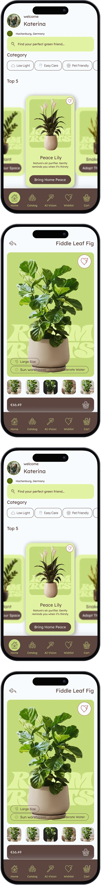
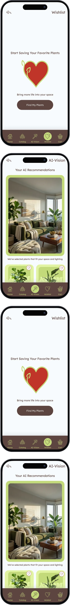
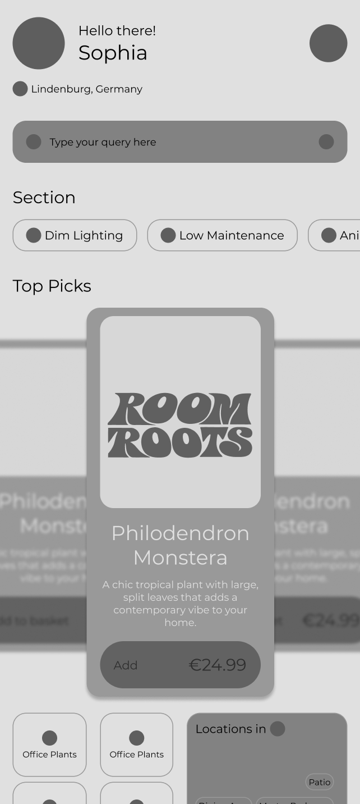
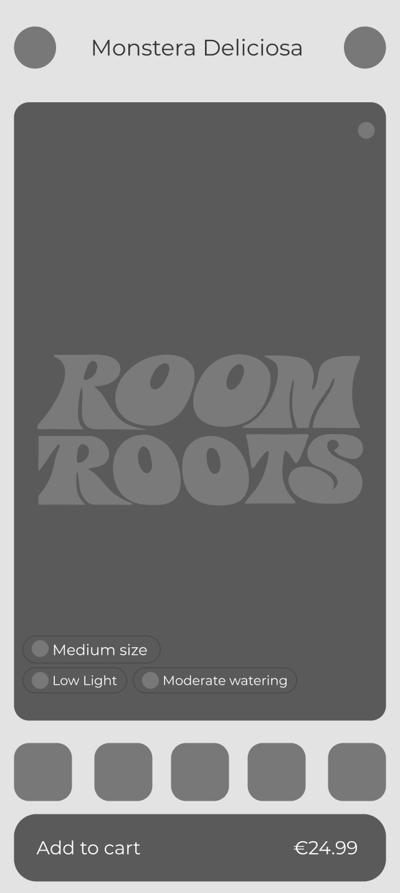
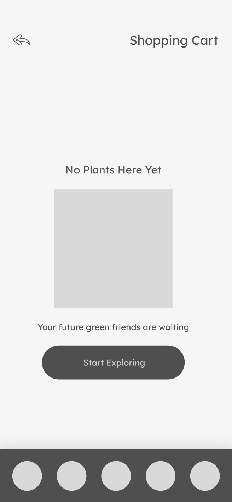
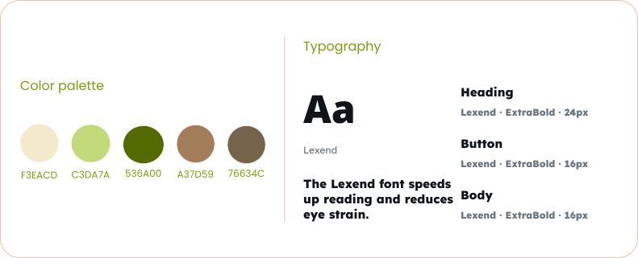
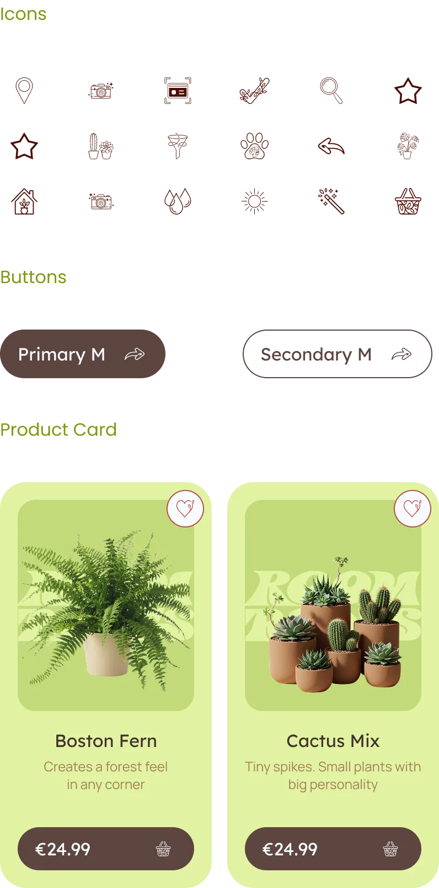

UX/UI-Case-Study
UX/UI-Case-Study
RoomRoots
KI-Pflanzenmatching nach Licht, Raumtyp, Pflegeaufwand und Haustieren
Eine mobile E-Commerce-App als MVP, mit der Menschen Pflanzen passend zu ihrem Raum, ihrem Licht, ihrer Pflegeerfahrung und ihren Vorlieben auswählen und kaufen. Personalisierte Empfehlungen und AI-Vision verringern die Unsicherheit und führen vom Stöbern bis zum Checkout.
 ProjektartMVP-Konzept
ProjektartMVP-Konzept- PlattformMobile App
 RolleUX/UI-Designerin
RolleUX/UI-Designerin UmfangVon der Recherche zum MVP
UmfangVon der Recherche zum MVP

 Das Projekt in Zahlen
Das Projekt in Zahlen
- 25–40Alter der Kernzielgruppe
- 4zentrale Hürden
- 4Matching-Kriterien
- 6Kernfunktionen des MVP
- 4User Flows
- 27Komponenten




 01 · Das Problem
01 · Das Problem
Viele Pflanzen, keine Orientierung
Der Pflanzenmarkt wächst und die Auswahl ist groß, doch die meisten Shops zeigen allen denselben Katalog und ignorieren die Bedingungen beim Käufer zu Hause. Das trifft Einsteiger am härtesten: Sie machen Fehler und verlieren die Lust am Kaufen.
Drei Fragen, die Käufer nicht beantworten können
Schaffe ich die Pflege?
Passt sie zu meinem Raum?
Ist genug Licht im Raum?
Vier Hürden beim Kauf
-
01
Fehlende Personalisierung
Licht, Raumtyp und Erfahrung werden nicht berücksichtigt. Alle sehen denselben Katalog.
-
02
Zu viele Optionen
Eine große Auswahl erschwert die Entscheidung: Man verliert sich zwischen den Optionen.
-
03
Keine Orientierung im Kontext
Nichts erklärt, welche Pflanze zu genau diesem Raum passt. Die Entscheidung bleibt beim Käufer.
-
04
Angst vor Fehlkäufen
Wem schon Pflanzen eingegangen sind, der hat Angst vor dem nächsten Kauf und entscheidet sich lieber gar nicht.
 02 · Recherche
02 · Recherche
Was die Recherche gezeigt hat
Das Hauptproblem ist nicht fehlende Auswahl, sondern fehlende Sicherheit. Nutzer brauchen weniger, aber relevantere Optionen und eine klare Orientierung, die zu ihrem Raum, ihrer Pflegeerfahrung und ihrem Alltag passt.
Zielgruppe
- Alter und Wohnsituation
- 25–40wohnen in Wohnungen oder Häusern
- Drei Arten von Käufern
- Einsteiger ohne Erfahrung
- Menschen mit Grundkenntnissen
- Menschen, die Innenräume gestalten
- Gemeinsame Motivation
- Unabhängig von ihrer Erfahrung wollen sie eine Pflanze, die zum Interior passt, mit den Bedingungen im Raum zurechtkommt und keine komplizierte Pflege braucht.
Sie wollen sicher sein, dass die Pflanze überlebt und gut aussieht.
Grundlage der Recherche
- 1
Kontextanalyse
Ein wachsender Pflanzenmarkt und Kataloge, die die Bedingungen beim Käufer ignorieren.
- 2
Zielgruppe
Menschen zwischen 25 und 40 Jahren in Wohnungen oder Häusern, von Einsteigern bis zu Interior-Designern.
- 3
Persona
Anna, 29, Office-Managerin in Köln, der schon Pflanzen eingegangen sind.
- 4
Nutzerszenario
Von einem Zimmer, das nach Feierabend leer wirkt, bis zur aufgegebenen Bestellung.
 03 · Zielgruppe
03 · Zielgruppe
Für wen ich gestaltet habe
Eine Persona und ein Nutzerszenario: Anna sucht eine Pflanze, die ihre Wohnung gemütlicher macht und bei ihr überlebt.
Persona
Pain Points
- Ich verstehe nicht, welche Pflanzen zum Licht passen
- Mir sind schon Pflanzen schnell eingegangen
- Den Pflegeaufwand kann ich vorher schwer einschätzen
- Ich habe Angst, wieder falsch zu wählen
Bedürfnisse
- Einfache Empfehlungen für meine Bedingungen
- Klare Pflegehinweise
- Sicherheit, dass die Pflanze nicht eingeht
- Eine Vorstellung davon, wie sie zu Hause aussieht
Ziele
- Die Wohnung gemütlicher machen
- „Leben“ in den Raum bringen
- Eine Pflanze ohne Fehlgriff auswählen
- Eine Lösung ohne komplizierte Pflege finden
„Ich wohne in einer Wohnung und arbeite im Büro. Mir ist wichtig, dass mein Zuhause gemütlich und schön ist, besonders nach einem Arbeitstag. Ich speichere oft Einrichtungsideen auf Pinterest und möchte, dass mein Raum genauso ordentlich und stilvoll aussieht. Ich habe schon Pflanzen gekauft, weiß aber nicht immer, welche zu meinen Bedingungen passen.“
Nutzerszenario
In Annas Worten, aus dem Russischen übersetzt
Nach der Arbeit merke ich, dass mein Zimmer leer und wenig gemütlich wirkt. Ich möchte eine Pflanze dazustellen, weiß aber nicht, welche zu meinen Bedingungen passt.
Pflanzen, die ich früher gekauft habe, sind schnell eingegangen. Diesmal möchte ich keinen Fehler machen und etwas Zuverlässiges wählen.
- 1
Öffnet die App
um eine Empfehlung zu bekommen, statt blind zu wählen
- 2
Macht ein kurzes Quiz
Licht, Raumtyp, Pflegeaufwand und Haustiere
- 3
Bekommt passende Pflanzen
die App schlägt die passenden vor
- 4
Prüft die Produktkarte
Bedingungen und Beschreibung auf einen Blick
- 5
Legt sie in den Warenkorb
und bestellt
 04 · Umfang des MVP
04 · Umfang des MVP
Das MVP in sechs Funktionen
Für das MVP habe ich nur die Funktionen behalten, die zum Testen der Kaufhypothese nötig sind.
- 01
Katalog
Verfügbare Pflanzen durchsehen, mit Basisinformationen und schneller Auswahl.
- 02
Produktkarte
Alles über die Pflanze: Bedingungen, Pflege und Empfehlungen.
- 03
Warenkorb
Die gewählten Pflanzen vor der Bestellung prüfen.
- 04
AI-Vision
Pflanzen passend zu den eigenen Bedingungen oder zu einem Foto des Raums.
- 05
Checkout
Daten eingeben und den Kauf abschließen.
- 06
Bestätigung
Eine Bestätigung, dass die Bestellung eingegangen ist, mit allen Details.
 05 · User Flows
05 · User Flows
Vom ersten Tippen bis zum Checkout
Vier Flows bilden den gesamten Einkauf ab, vom Stöbern im Katalog und dem KI-Matching über personalisierte Empfehlungen bis zum Checkout, mit den wichtigsten Interaktionen und Entscheidungen in jeder Phase.
MVP-Funktionen 01 · 02 · 03
Nach dem App-Start setzt die Person den Filter Medium Light, wählt im gefilterten Katalog die Monstera Deliciosa, legt sie in den Warenkorb und kehrt zum Startbildschirm zurück.
Screens: App-Einstieg · Start · Filter · Katalog · Produktseite
- StartApp-Start
- ScreenStartbildschirm
- AktionFilter „Medium Light“ setzen
- ScreenGefilterter Katalog
- Aktion„Monstera Deliciosa“ wählen
- ScreenProduktseite
- AktionIn den Warenkorb
- Zurück
 Startbildschirm
Startbildschirm
- Zurück
MVP-Funktion 04 · AI-Vision
Vom AI-Vision-Banner auf dem Startbildschirm über Onboarding und Quiz bis zum Foto des Raums. Ist das Foto ungültig, geht es zurück zum Upload-Screen; ist es gültig, verarbeitet die KI es.
Screens: Start · AI-Vision · Onboarding · Quiz · Foto-Upload · Laden
- ScreenStartbildschirm
- AktionZum KI-Banner scrollen
- ScreenAI-Vision-Banner
- AktionAuf „Get My Match“ klicken
- ScreenOnboarding-Screens
- AktionQuiz abschließen
- ScreenFoto-Upload-Screen
- AktionFoto des Raums hochladen
- EntscheidungIst das Foto gültig?
- JASystem: KI-Verarbeitung
- NEINZurück zum Foto-Upload-Screen
- JA
- SystemSystem: KI-VerarbeitungWeiter: 03 · Empfehlungen
MVP-Funktionen 04 · 02 · 03
Zwei parallele Wege ab den KI-Ergebnissen: Fiddle Leaf Fig oder Bird of Paradise wählen, die Produktseite öffnen und in den Warenkorb legen. Von dort geht es zurück zu den Ergebnissen oder über die Navigationsleiste weiter zum Warenkorb.
Screens: KI-Empfehlungen · Produktseiten
- ScreenDarstellung der KI-Ergebnisse
- Wählen„Fiddle Leaf Fig“
- Wählen„Bird of Paradise“
- Wählen
- Aktion„Fiddle Leaf Fig“ wählen
- ScreenProduktseite
- AktionIn den Warenkorb
- Nächster SchrittAuf die Navigationsleiste tippen
- ZurückDarstellung der KI-Ergebnisse
- Nächster Schritt
- Aktion„Bird of Paradise“ wählen
- ScreenProduktseite
- AktionIn den Warenkorb
- Nächster SchrittAuf die Navigationsleiste tippen
- ZurückDarstellung der KI-Ergebnisse
- Nächster Schritt
- AktionAuf die Navigationsleiste tippenWeiter: 04 · Checkout
MVP-Funktionen 03 · 05 · 06
Von der Navigationsleiste zum Warenkorb, wo ein Wischen die Monstera Deliciosa löscht, über das Versandformular mit „Use App Data“ und den Bezahl-Screen bis zur erfolgreichen Zahlung.
Screens: Warenkorb · Versand · Zahlung · Zahlung erfolgreich
- AktionAuf die Navigationsleiste tippen
- ScreenWarenkorb
- Aktion„Monstera Deliciosa“ per Wischen löschen
- ScreenAktualisierter Warenkorb
- ScreenVersandformular
- Aktion„Use App Data“ umschalten
- ScreenBezahl-Screen
- AktionAuf „Pay“ klicken
- EndeZahlung erfolgreich
Wireframes






 06 · UI-Kit
06 · UI-Kit
Ein UI-Kit und ein Hi-Fi-Prototyp
Zentrale Komponenten aus einem größeren UI-Kit: Farbe, Typografie, Icons, Buttons und Produktkarten.
- 27Komponenten mit ihren Varianten
- 21Farben in der Palette, 17 benannt: Primärgrün, Neutraltöne, Fehler, Erfolg, Weiß
- 8Textstile, eine Schrift: Lexend
- 2Button-Stile: Primary und Secondary
- 5Bereiche in der Tab-Leiste StartKatalogAI-VisionWunschlisteWarenkorb
- Hi-Fi-Prototypin Figma, mit animiertem Onboarding-Karussell und Warenkorb
- ProduktkarteFoto, Name, eine kurze Zeile, Preis, In den Warenkorb und ein Herz für die Wunschliste
- Iconsein Linienstil in mehreren Größen
- Filter-ChipsLow Light, Easy Care, Pet Friendly
- BewertungenBewertungskarten mit ein bis fünf Sternen
Ein Blick ins UI-Kit
Frames verschieben


 07 · Ergebnis
07 · Ergebnis
Erkenntnisse aus dem Projekt
Das MVP soll die Auswahl einfacher und weniger unsicher machen.
Das Projekt in Kürze
- 01 · ProblemSicherheit
Käufer brauchen weniger, aber besser passende Pflanzen und klare Pflegehinweise.
- 02 · LösungRoomRoots
Ein kurzes Quiz und AI-Vision grenzen den Katalog nach Licht, Raumbedingungen, Pflegeerfahrung und Haustieren ein.
- 03 · MVP6
Kernfunktionen auf einem UI-Kit, vom Katalog bis zur Bestellbestätigung, in einem Hi-Fi-Prototyp.
Vier Schlussfolgerungen
Der gesamte Weg vom ersten Tippen bis zur bezahlten Bestellung ist abgebildet und als Prototyp umgesetzt, und ein einheitliches UI-Kit hält das Interface konsistent, damit es mit dem Produkt wachsen kann.
RoomRoots macht den Pflanzenkauf zu einem einfachen, persönlichen und sicheren Erlebnis.
- 01
Einfachheit schafft Sicherheit
- 02
Personalisierung macht die Auswahl relevant
- 03
Kontext unterstützt bessere Entscheidungen
- 04
Ein klarer Ablauf stärkt das Vertrauen


 Wohnort: Hachenburg, Deutschland
Wohnort: Hachenburg, Deutschland
Gestalten wir für echte Bedürfnisse
Ich suche eine Stelle als UX/UI-Designerin in Deutschland. Schreiben Sie mir eine E-Mail, rufen Sie an oder melden Sie sich über LinkedIn oder Telegram.